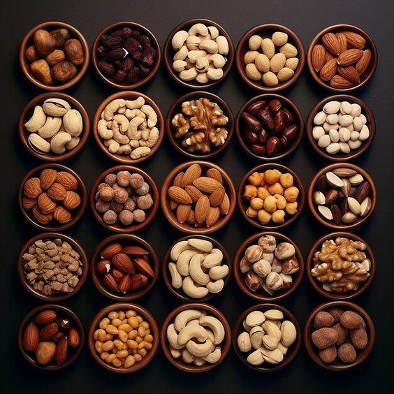
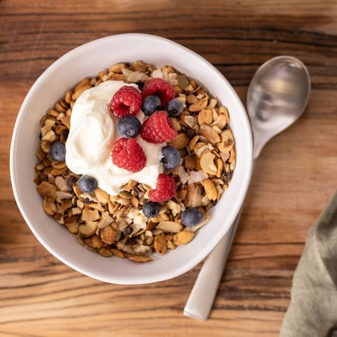
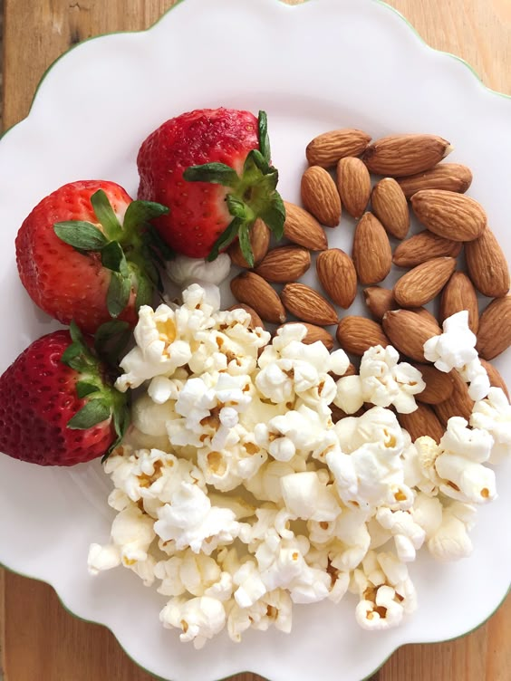

Essential Nutrition Tips for a Healthier You
Eating well is key to maintaining good health and preventing chronic diseases. Here are some essential nutrition tips to help you make healthier choices in your daily life.
1. Embrace Variety in Your Diet

Eating a variety of foods ensures that you get all the essential nutrients your body needs. Include fruits, vegetables, whole grains, lean proteins, and healthy fats in your meals. Aim to fill your plate with a rainbow of colors to maximize nutrient intake.
2. Prioritize Whole Foods
Choose whole, unprocessed foods over processed options. Whole foods are rich in nutrients and free from artificial additives. Examples include fresh fruits, vegetables, whole grains, nuts, and seeds.
3. Stay Hydrated
Water is vital for overall health. Aim to drink at least eight glasses of water a day, or more if you’re active. Hydration helps with digestion, nutrient absorption, and maintaining energy levels.
4. Control Portion Sizes

Be mindful of portion sizes to avoid overeating. Using smaller plates can help you manage portions more effectively. Listen to your body’s hunger cues and stop eating when you feel satisfied, not stuffed.
5. Limit Added Sugars and Salt

Excessive sugar and salt can lead to health problems like obesity and high blood pressure. Check food labels for added sugars and sodium, and try to limit your intake. Instead, use herbs and spices to flavor your meals.
6. Plan Your Meals

Planning your meals can help you make healthier choices and avoid last-minute unhealthy options. Prepare a weekly menu and grocery list to stay organized and focused on nutritious foods.
7. Don’t Skip Breakfast
Breakfast is an important meal that kickstarts your metabolism for the day. Choose a balanced breakfast that includes protein, whole grains, and fruits or vegetables to provide lasting energy.
8. Snack Smart
Healthy snacks can help curb hunger between meals. Opt for nutritious snacks like fruit, yogurt, nuts, or vegetables with hummus. These options provide essential nutrients without added sugars or unhealthy fats.
9. Listen to Your Body
Pay attention to how different foods make you feel. Some foods may cause discomfort or low energy. By understanding your body’s reactions, you can make better food choices that promote overall well-being.
10. Seek Professional Guidance
If you're unsure about your dietary needs, consider consulting a registered dietitian or nutritionist. They can provide personalized advice based on your health goals and lifestyle.
Adopting these nutrition tips can lead to a healthier lifestyle and improved well-being. Remember, making small changes over time can have a significant impact on your health. Start today and enjoy the journey to better nutrition!